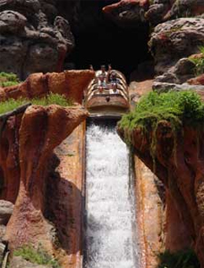

SPLASH MOUNTAIN
SPECS
Max Height: 87 ft.
Max Speed: 40 mph
Inversions: 0
Duration: 9 min. 21 sec.
Manufacturer: Disney
REIVEW
While this may not be a roller coaster, it is worth a review. It is loaded with tons of Disney scenery. It’s hard to not get consumed in the story even if you have been on it before. It is such a long ride with a few little drops before the massive plunge into the thorns. Definitely go on this ride if you are in the Magic Kingdom.